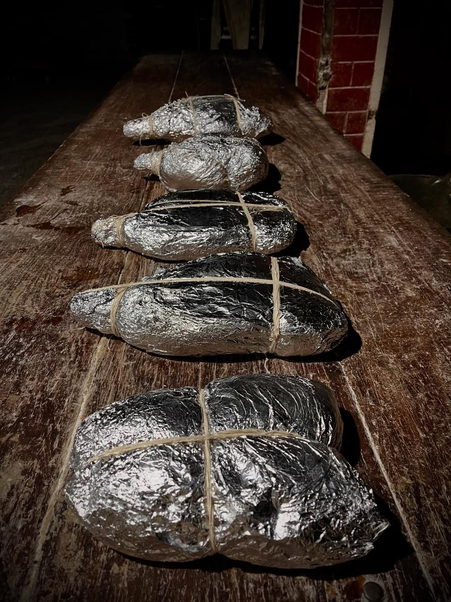
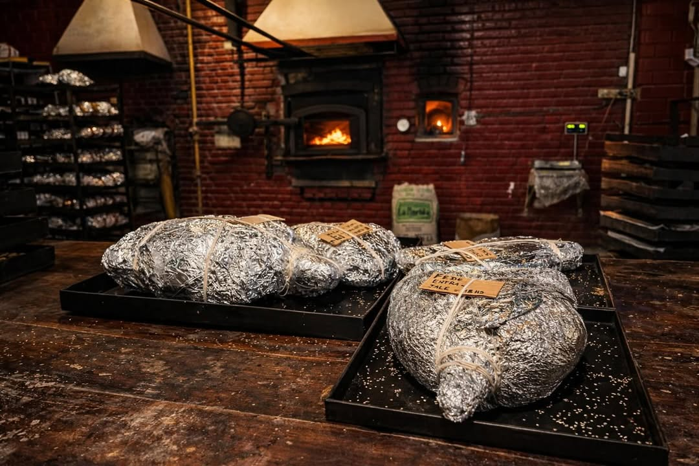
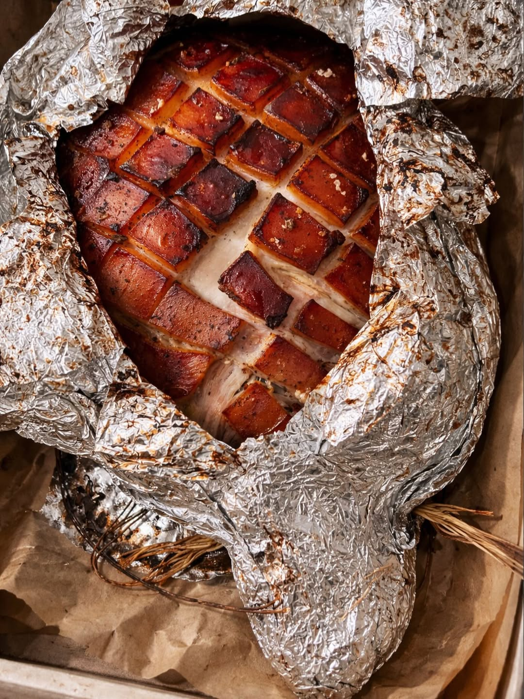
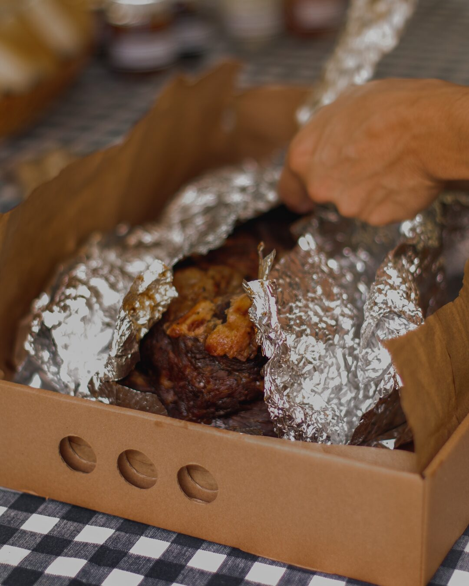

Storytelling de producto
Del horno a la mesa, paso a paso
Esta web no muestra un pernil. Lo hace vivir. El usuario lo ve envuelto, imagina la cocción, siente el calor, ve cómo se abre y termina entendiendo exactamente por qué lo quiere en su evento.




1
Se envuelve y se ata
Aluminio, tiempo y técnica. La pieza se protege, concentra jugos y empieza el ritual que después se nota en cada corte.
2
Entra al horno
Fuego lento, calor parejo y una cocción que transforma textura, aroma y color hasta volverlo imposible de ignorar.
3
Sale dorado y jugoso
Acá aparece la magia: costra, brillo, calor y ese momento donde ya no estás mirando una comida. Estás imaginando el primer bocado.
4
Se sirve y rompe la mesa
Listo para cortar, armar sangucheitos y convertir cumpleaños, reuniones y eventos en algo inolvidable.